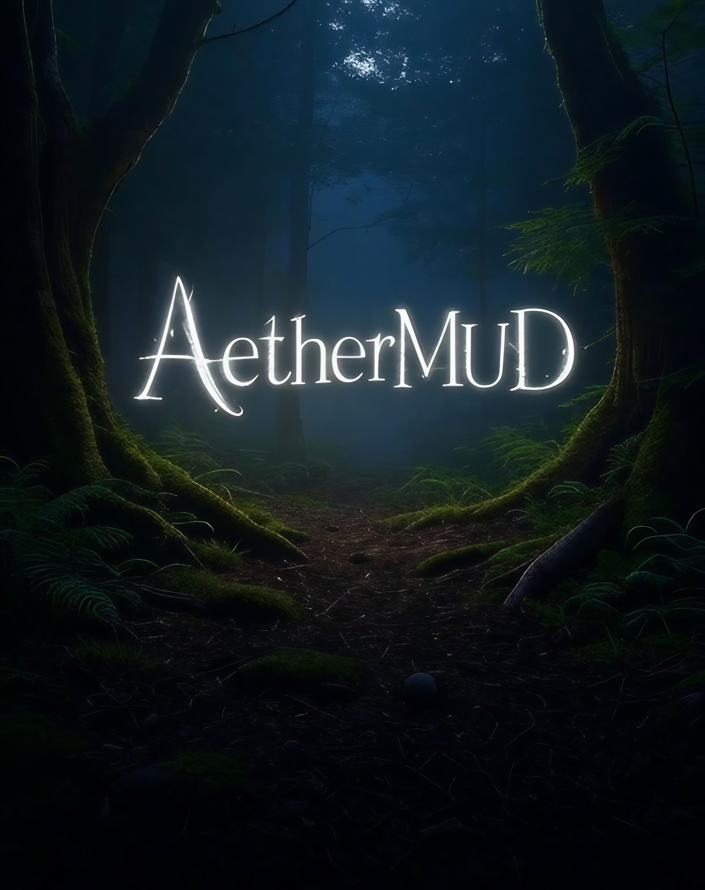

AetherMUD, a TTRPG-inspired MUD on FluffOS / Nightmare III.
Palladium Rifts on a living mudlib. Click the image to play in your
browser, or connect with Mudlet or telnet on
port 1122.
Features
Measured from the live code (2026-07-20):
- One account, up to 5 characters. Log in with an
account name and password, then pick or create a character.
- 62 playable races, from
human to great horned dragon, secondary vampire, psi-stalker,
atlantean, and mutant animals
- 66 Classes: Coalition military, Juicers, Crazies,
Cyber-Knights, Glitter Boy pilots, Ley Line Walkers, Techno-Wizards,
Mind Melters, and more
- 158 skills, 115 spells,
51 psionic powers
- 430+ playable rooms across Praxis, Chi-Town,
Tolkeen, Horton, New Camelot, and NGR Germany, plus stub zones
(see the world guide)
- 174 player commands,
MDC/SDC combat, rift travel, radios, banking, and a two-level
in-game help system
New here? Start with character creation
and the connection guide.